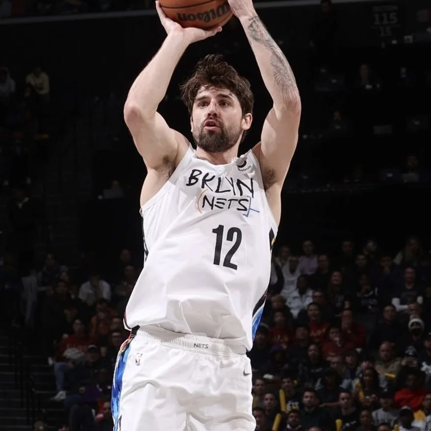
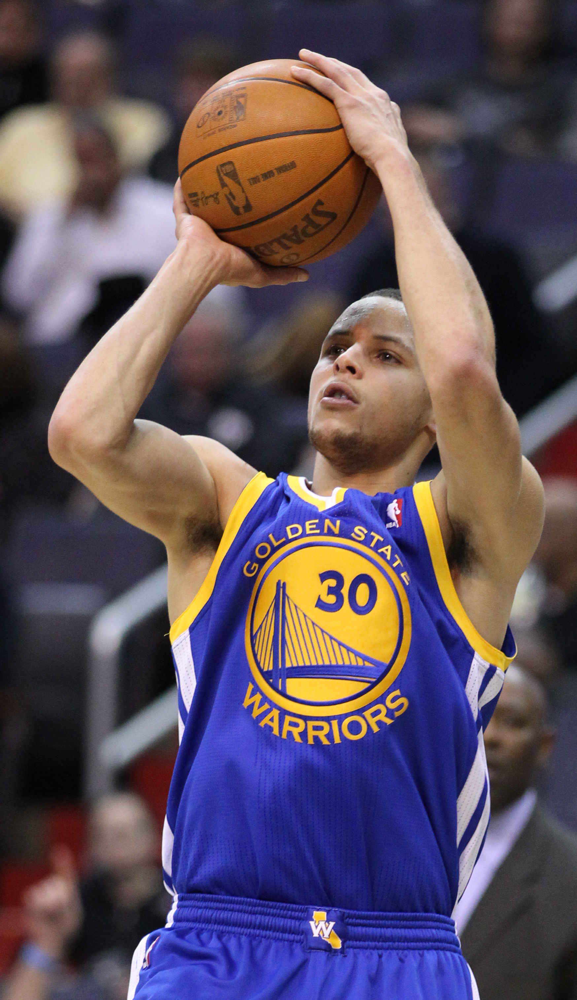
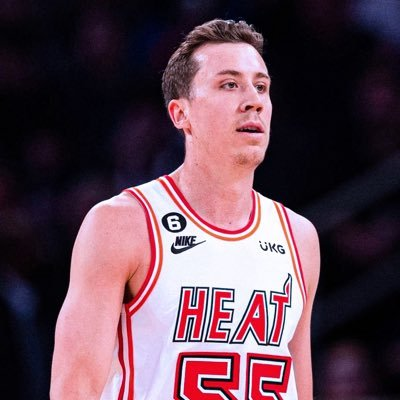
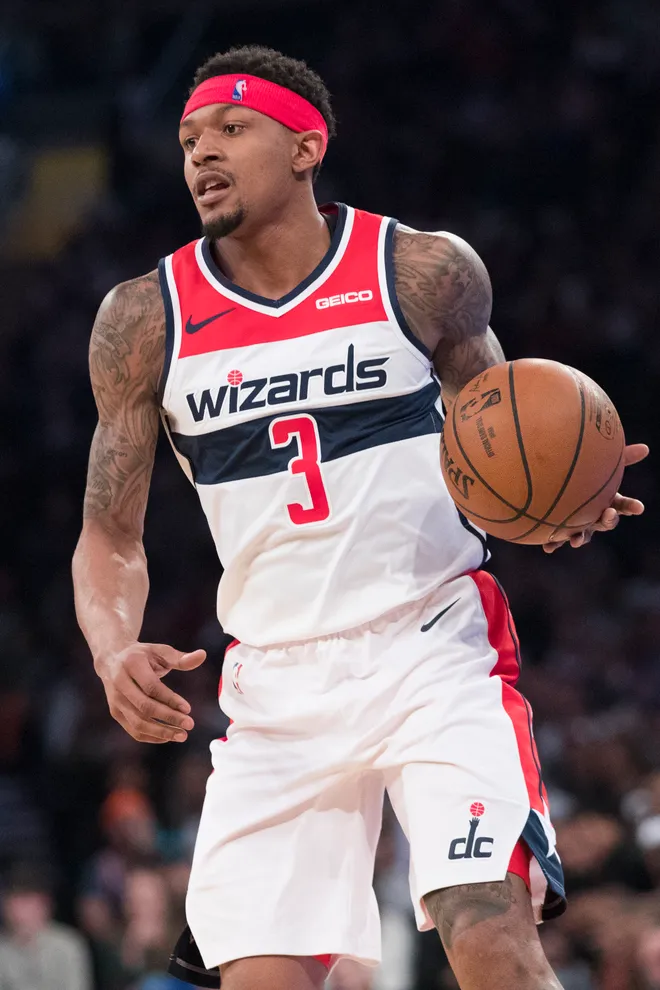

Joe Harris might be the most dangerous shooter in the NBA. A second-round pick who toiled at the end of rosters and in the G League before basketball trended his way, Harris doesn’t have the speed, handle, or athleticism to regularly weave through defenders and finish at the hoop. Instead, his value comes from behind the 3-point line, where the 28-year-old uses poise and technique to harness basketball’s most powerful shot.
In early March against the Celtics, a few days before the NBA shut down due to COVID-19, the Nets ran one of their cleanest sideline-out-of-bound plays with the goal of setting up Harris to do just that. It starts with Harris inbounding to DeAndre Jordan at the top of the key. After Jordan passes the ball to Garrett Temple, Harris fakes toward a Spencer Dinwiddie back pick and instead uses the one Jordan sets up top. Ideally, Harris would now find himself open for a catch-and-shoot 3.

Joe Harris
Instead, Javonte Green—a springy 15th man who reminds Celtics GM Danny Ainge of Tony Allen—shoots the gap and crashes into Jordan, sending the big man stumbling backward and interrupting Brooklyn’s cadence. Harris is forced to hesitate, and, for a split second, Boston’s defense has what it wants.
But just as the possession starts to feel like a dead end, Harris rips the ball across his body, takes one hard dribble toward his right, then one-two skips his feet toward the 3-point line. Green stretches out for a last-second contest, but the shot is up before he gets there and through the basket by the time he plants his feet and turns his head. In an instant, a possession on the verge of going dark turns into a golden opportunity.
In today’s NBA, catch-and-shoot 3s are the lifeblood of any elite offense. Last season, 102 players launched at least 200 of them, and no one was more accurate than Harris, who hit 48.1 percent. And we could see an uptick in attempts in the NBA’s Orlando bubble, where the condensed schedule may lead teams to shoot even more 3s to increase unpredictability.
But defenders are becoming just as focused, if not more so, on taking those shots away. For shooters like Harris to survive in the league, let alone excel, they must adapt.
“I’m not one of these guys who’s gonna get the ball and try to facilitate and put it on the deck,” Harris said. “But I’m always trying to find windows, find space. A lot of those catch-and-shoot opportunities are few and far between right now.”
His solution? The one-dribble 3.
“If I don’t have space initially, off of some sort of screening action,” he said, “then I utilize one dribble.”
It may sound simple, but a single well-timed dribble has become one of the primary countermoves helping shooters, whether they’re specialists or superstars, stay a step ahead of defenses. The NBA has been transformed the past few years by the 3-point shot, but the next evolution to the revolution begins with a dribble.
“It’s just a little bit different than what you’re typically going to see.”
Duncan Robinson, Miami Heat wing
Progress doesn’t happen overnight. It took decades for NBA teams to stop viewing the 3-point line as a gimmicky strip of paint and embrace its statistical and spatial advantages. That eventually led to several realizations that continue to alter basketball geography, such as the idea that 3s from the corner, where the line is 1.75 feet closer to the basket, are more desirable than those launched along the arc. Steph Curry then advanced the shot even further by pulling up off the dribble whenever and wherever he felt like it.

Stephen Curry
In 13 years, from 2000-01 to 2013-14, the NBA’s average 3-point rate (the percentage of total field goal attempts that were 3s) rose 8.9 percentage points, from 17.0 to 25.9. The next season Curry won his first MVP. In six seasons since, the NBA’s average 3-point rate has jumped from 26.8 to 38.2. That’s an 11.4-percentage-point increase in nearly half as much time.
The stylistic changes on one side of the ball always influence the other. The 3-point shot is an essential weapon in the NBA’s never-ending turf war, spreading the court and forcing defenders to cover more ground. But defenses have responded.
Numerous shooters interviewed for this story said closeouts are smarter and more aggressive than ever before. Coverages that were once primarily used to slow down the best of the best in extreme situations are now becoming commonplace; instead of defenders positioning themselves between their man and the basket, some are standing between their man and the 3-point line. The defense’s goal is clear: Turn a 3 into a less efficient long 2 or contested floater. This poses a problem for the players who make a living off the 3.
“For me it’s more difficult trying to stay behind the line, especially nowadays with the league being so analytical,” said Toronto Raptors rookie Matt Thomas, who is 35-for-75 from 3-point range this season. “A deep 2 is not necessarily the best shot for a lot of teams, but that is your natural reaction: ‘Oh, you got run off, step in and shoot it.’”
Instead of settling in the midrange, the magma in the NBA version of Floor Is Lava, shooters are countering the counter. What we’re seeing are shooters less inclined to take what the defense is willing to give. Now, they’re taking what they want.
The mentality manifests in a snippet of NBA parlance that coaches, skill trainers, and a growing number of players abide by: Keep a 3 a 3. Rather than drive into the paint or pull up from midrange, it’s better to evade the defender’s closeout or shot contest with one dribble, stay behind the arc, and let it fly. The shot isn’t simple or easy. It has to be launched in a nanosecond against determined opponents with long arms who are keen to invade personal space. Before they close in, the shooter must recapture a rhythm that was momentarily lost.
“Once you put the ball down, you’ve gotta reset the ball in a position that you like,” Washington Wizards guard Shabazz Napier said. “That’s where the field goal percentages drop. It’s not like players want to dribble.”
But math justifies the higher degree of difficulty. Possessions that end with a 3-point attempt, regardless of how complicated or forced they might seem, are small victories for the offense relative to almost any other alternative. And they’re huge victories for the players who have made a career out of the 3-pointer.
For Detroit Pistons guard Svi Mykhailiuk, the one-dribble 3 has helped him stay on the court. A sparsely used reserve for LeBron James’s Los Angeles Lakers for most of his rookie season, Mykhailiuk shot over 40 percent from 3 this season, earning him a spot in the Rising Stars Game and Detroit’s starting lineup. But when his name started appearing on opposing scouting reports, he needed something else to throw at defenders.
“I never really worked on it before I got to the league,” he said. “And then when people started to run me off, I had to figure out new ways to shoot the ball. [Now] I work on it before every game. Before practices, after practices.”

Duncan Robinson
Miami Heat wing Duncan Robinson, who is drilling 44.6 percent of his 8.3 3s per game, also started seeing more defenders track him as he raced around the floor in search of the ball. Robinson described his version of the one-dribble 3 as more of a “throw-out dribble”—one dribble in stride to evade a defender hot on his tail. “So I’ll come off a pin-down, throw it out, one dribble,” he said. “It’s just a little bit different than what you’re typically going to see.”
Denver Nuggets guard Troy Daniels, now on his seventh team in six years, credits the shot for keeping him in the league. “You just have to have it in your repertoire,” said Daniels, a 39.6 percent career 3-point shooter. “It’s part of every one of my workouts. Every single one.”
These three players are far from the only ones benefiting from the move. Four seasons ago, 13 teams made less than 30 percent of their one-dribble 3s. This season there were only two. Quantity plays into the volatility of these numbers—even now, teams average fewer than 10 per game—but the trend is expanding in noticeable ways:
NBA skills trainer Drew Hanlen recognized the 3-point line’s value in college, where his Belmont teams bombed away under longtime coach Rick Byrd. About five years ago, he wanted to emphasize the shot in private workouts, as a way for players to extend their careers, knowing they may someday go from primary options to complementary role players. So he started with one of his oldest clients, Washington Wizards guard Bradley Beal.
“I always joke around with Brad,” Hanlen said. “He’s my guinea pig.”

Bradley Beal
They worked on speeding up the release of Beal’s shot off the catch, coming off screens, and creating space from a triple-threat position when in isolation—which is where the one-dribble pull-up was emphasized. The idea is to get the ball from the court to your “pickup point”—i.e., where you first hold the ball with two hands before a jumper, usually around the belly button—and then to your shooting pocket with enough force, timing, and coordination to stay ahead of the defender who’s right in your face.
Once a stack of moves were massaged into Beal’s muscle memory by practicing them in an empty gym, he went to work against a dummy defender. After that it was on to live action: one-on-one games where the person guarding Beal knew he wasn’t allowed to step inside the 3-point arc. “He had to shoot really hard, contested shots,” Hanlen said.
Before he could become one of the NBA’s premier offensive threats, Beal had to get more comfortable handling the ball on the perimeter and lean less on his in-between game. The one-dribble 3 helped him. This season, he took half as many midrange attempts as he did five years ago and crushed his career high in scoring (30.5 PPG).
The one-dribble 3 isn’t only being honed by catch-and-shoot threats like Harris, JJ Redick, or Kyle Korver. Some of the game’s more well-rounded scorers, like Beal and Damian Lillard, have used it to make their offensive repertoire even more dangerous. When the one-dribble 3 is wielded by a stationary shooter, it’s a parachute. When someone like Kemba Walker has it in their bag, a single dribble becomes a choose-your-own adventure that leaves the defense guessing.
A spot-up shooter may use the single dribble to evade a curious closeout, but a player like James Harden uses it as a convenient way to access stepbacks, side steps, and different footwork arrangements that have become more popular across the league.
After seeing Beal’s success, nearly identical regimens were assigned to Zach LaVine and then Jayson Tatum, two longtime Hanlen disciples.
A testament to the one-dribble 3’s worth can be found in Tatum’s maturing game. Tatum is a gifted scorer from all three levels, and the one-dribble 3 allows Boston’s 22-year-old All-Star to attack with the element of surprise. Instead of reacting to the opposition, Tatum manipulates the action without warning.
The only player who’s taken more one-dribble 3s than Tatum this season is LaVine. He still remembers his dad drilling midrange pull-ups into his DNA during driveway workouts as a kid. Kobe Bryant, Len Bias, and Michael Jordan were the models. But in recent years, LaVine has made an effort to extend the shot’s range, giving himself a road map to become a more lethal and efficient offensive player.
“Now it’s just 3s, but my first couple years I shot a whole bunch of one-dribble pull-ups along the baseline and stuff like that,” he said. “It’s just something that I had to add. Instead of me getting catch-and-shoots—they’ve been taking those away—the one-dribble pull-up has helped me create space.”
According to Hanlen, it takes time to make all these moves feel like second nature, especially if a player is accustomed to scoring primarily off a pass. “You’ll see a lot of guys’ shots break down off the dribble,” he said. To get them comfortable from one season to the next, “most of them are making 250 to 500 3s a day, every single day throughout the summer. That’s how they actually see those increases in range, increases in percentage, and increase in frequency of them taking those shots.”
In the years ahead, the 3-point arc will be a line of demarcation—where the story of every loss and every win is written. For now, the one-dribble 3 has given shooters the upper hand, but defenses will respond, just like they did when 3s started to fly more and more a few years ago. The battle between offense and defense has waged throughout the game’s history—only now, there’s more space to account for, more decisions to be made, more speed, creativity, and freedom to implement moves that keep the offense one step ahead.
That seemingly insignificant shot Harris made against the Celtics? It’s just the beginning.
Michael Pina is an NBA writer from Boston who lives in Brooklyn. His work has been published in GQ, The New York Times, and several other places across the internet. He is also the cohost of Sports Illustrated’s Open Floor podcast.